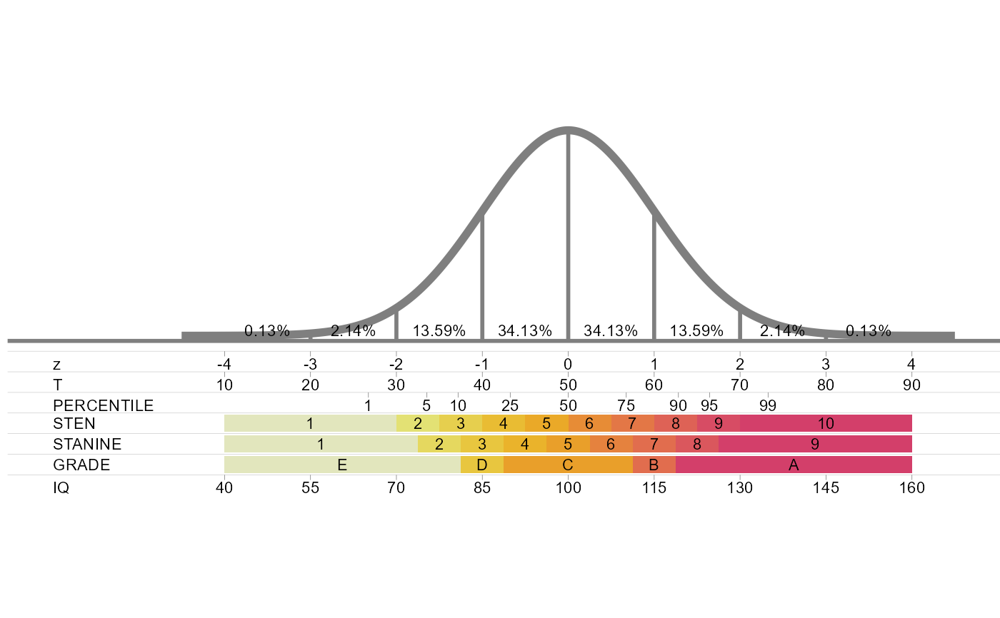
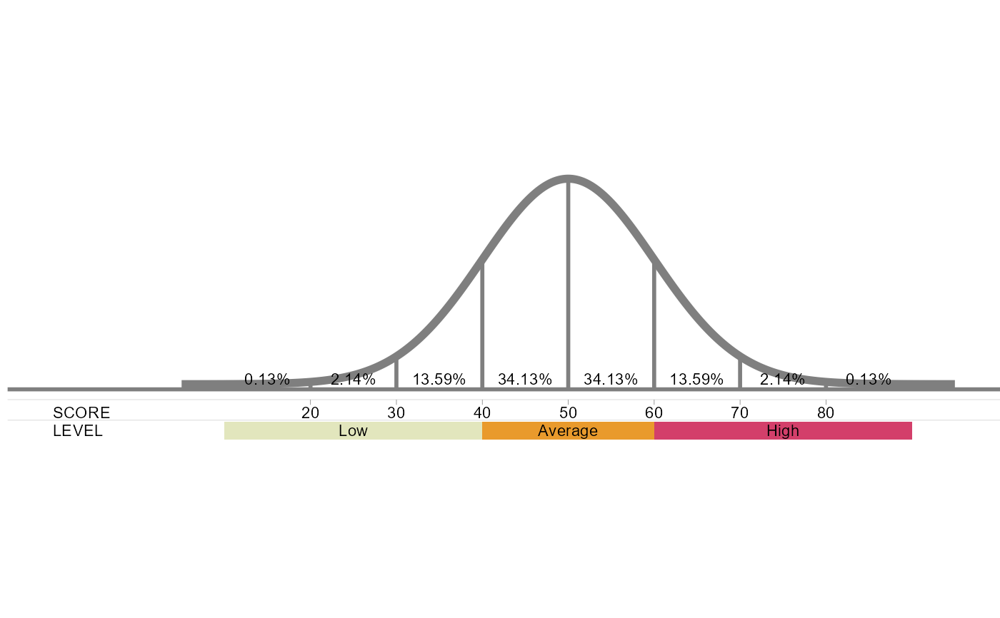
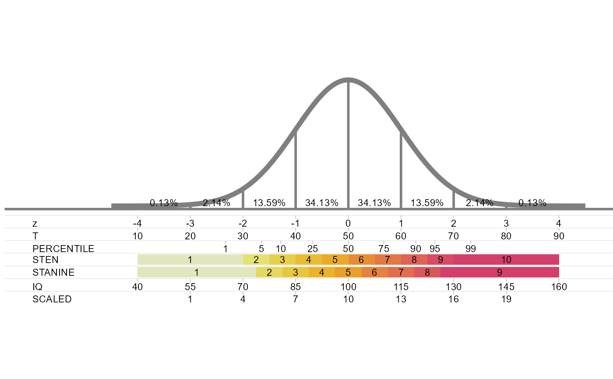

Plot the standard normal curve with your own score scales
standard_normal_custom.RdDraws the standard normal curve, marked at every standard deviation with the percentage of cases in each interval, with the scales you describe in a data frame lined up under it. A scale can be a row of labelled tick marks (like T scores), a row of coloured bands (like stanines), or both.
Usage
standard_normal_custom(scales = standard_normal_scales_data(), size = 3)Arguments
- scales
A data frame with one row per tick mark or band, and the columns:
- scale
Name of the scale, shown at the left of its row. Rows are drawn from top to bottom in the order the names first appear.
- z
Position on the z axis: where the tick mark goes, or where the band starts.
- label
Text shown at the tick mark or inside the band.
- z_end
Optional. Where the band ends on the z axis. Leave the column out, or use
NA, for a tick mark.- colour
Optional. Fill colour of the band. Bands without a colour are coloured from light to dark along their row.
The default,
standard_normal_scales_data(), holds the scales ofstandard_normal_scales.- size
Text size of all labels, in millimetres (ggplot2 text size). The default of 3 suits figures around 7 inches wide.
Value
A ggplot object. Print it to draw the chart, or save it with
ggplot2::ggsave(). The chart keeps a fixed aspect ratio, and every scale you add
makes it taller.
Examples
standard_normal_custom()

# your own scales: tick marks for a test score and bands for performance levels
my_scales<-rbind(data.frame(scale="SCORE",z=-3:3,z_end=NA,label=seq(20,80,10)),
data.frame(scale="LEVEL",z=c(-4,-1,1),z_end=c(-1,1,4),label=c("Low","Average","High")))
standard_normal_custom(my_scales)

# start from the standard scales, drop the grades and add Wechsler scaled scores (mean 10, SD 3)
scales<-standard_normal_scales_data()
scales<-scales[scales$scale!="GRADE",]
scales<-rbind(scales,data.frame(scale="SCALED",z=-3:3,z_end=NA,label=seq(1,19,3),colour=NA))
standard_normal_custom(scales)
